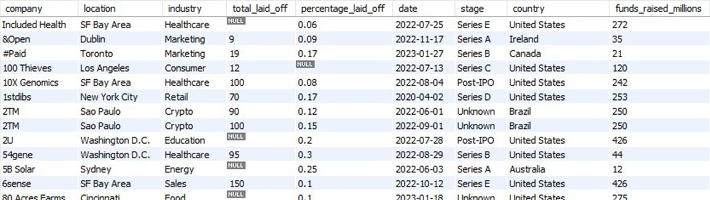

Exploratory Data Analysis in SQL
In this project I took the results of the previous project and performed various analysis on layoff data. Something to keep in mind is that the timeframe for this data take place during the peak influence of the Covid-19 pandemic. The code can be found in the repository linked below.
These are some of the insights I was able to pull from this analysis:
- Google had the most layoffs in one day with 12,000
- Amazon had the most overall layoffs during this 3 year period with 18,150
- The consumer and retail industries were impacted the most with 45,182 and 43,613 layoffs respectivly
- 2022 had the most layoffs, but 2023 most likely will surpass that
Most of the insights gathered here look about right such as companies like Google and Amazon having large amounts of layoffs. The industries affected the most also make sense due to many stores closing during the pandemic, most retail stores were operating with reduced hours or closed entirely. the amount of layoffs started trending upwards as the years went on which make sense because as time passed on, more bussinesses started to return to normal operations and needed to lay off extra hires that were brough on during the pandemic. while 2022 had the most overall in this data 2023 came very close and only has 3 months of recorded data, which havily implies that 2023 ended with more layoffs than 2022.
Link to repository:
Github